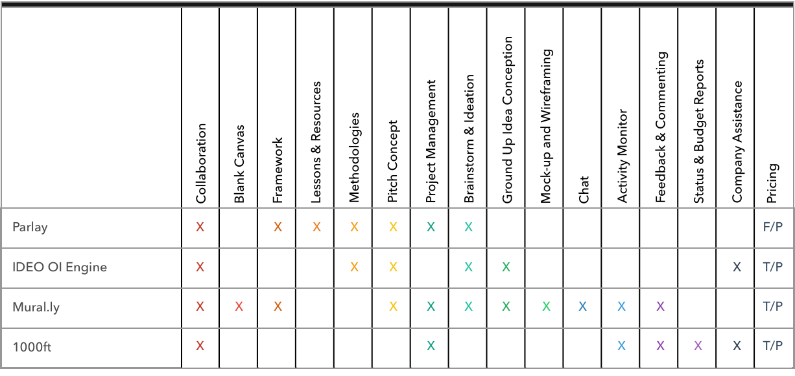
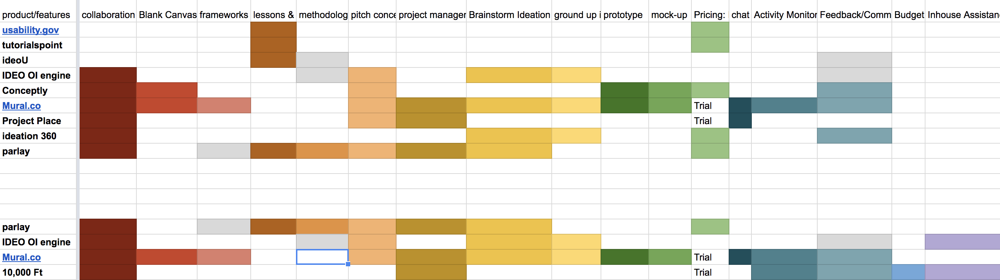
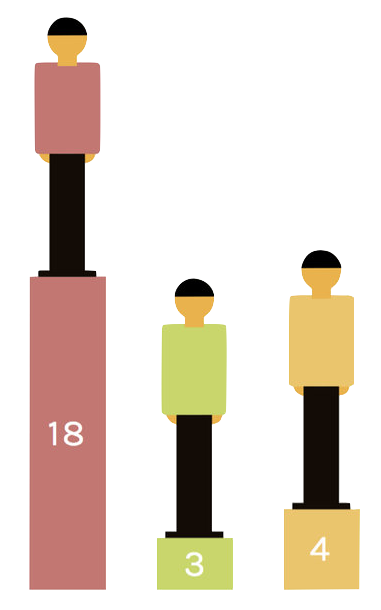
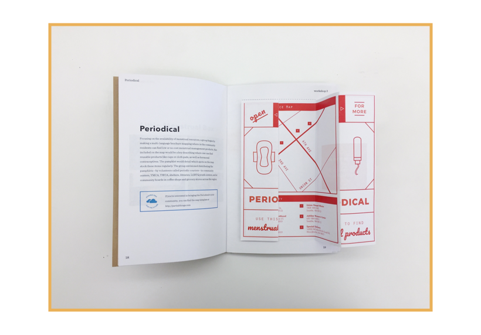
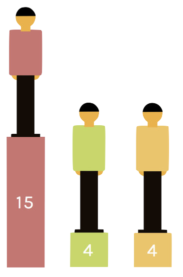
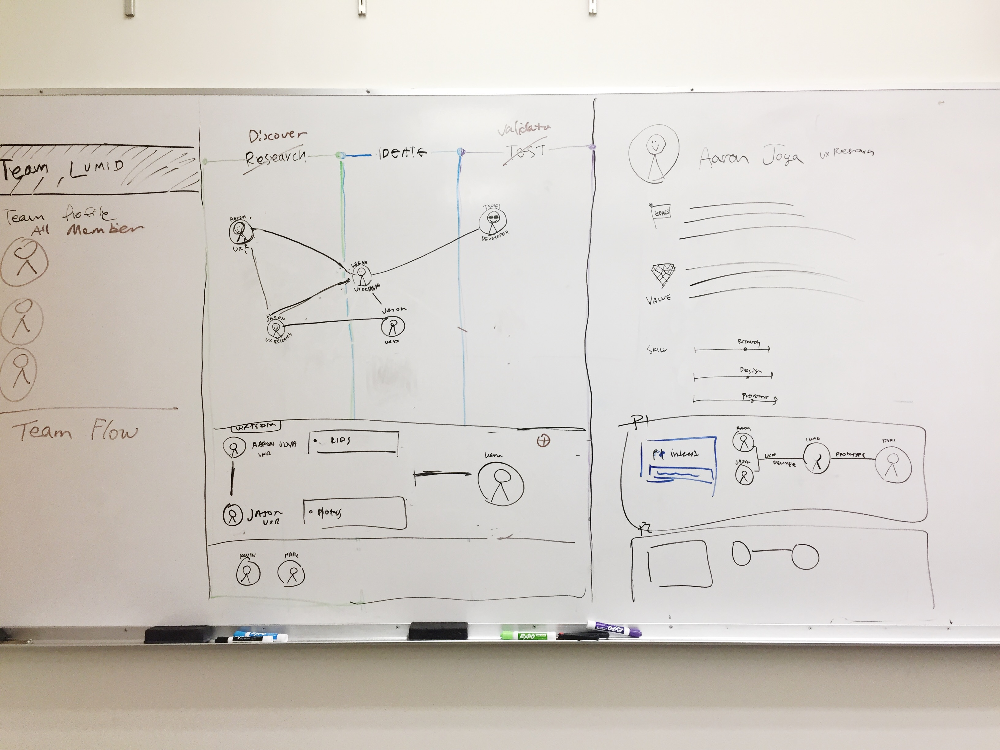
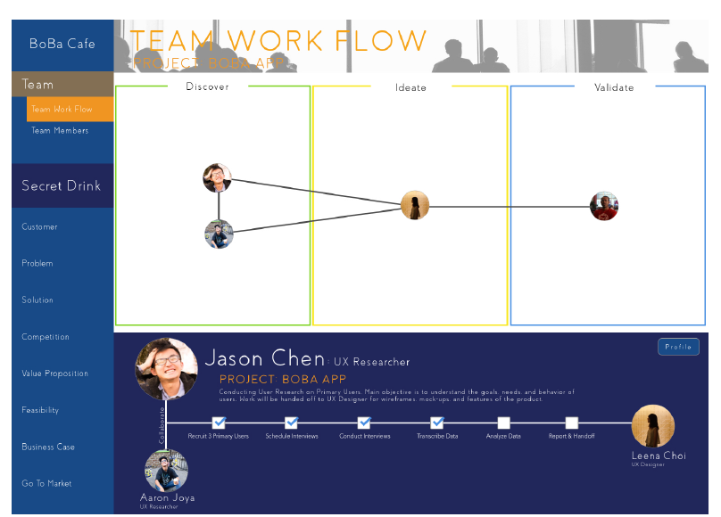
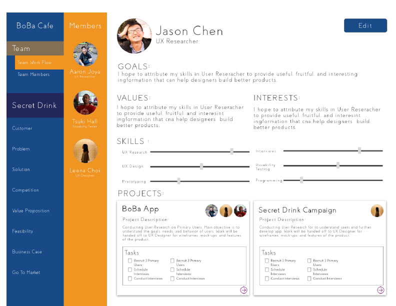

<!DOCTYPE html>
<!--  This site was created in Webflow. http://www.webflow.com  -->
<!--  Last Published: Mon Apr 30 2018 05:03:34 GMT+0000 (UTC)  -->
<html data-wf-page="5a62a7a0b7d11f000155b4e7" data-wf-site="5a575fca046ca90001372abd">
<head>
  <meta charset="utf-8">
  <title>Lumid | Leena Choi</title>
  <meta content="Lumid | Leena Choi" property="og:title">
  <meta content="width=device-width, initial-scale=1" name="viewport">
  <meta content="Webflow" name="generator">
  <link href="css/normalize.css" rel="stylesheet" type="text/css">
  <link href="css/webflow.css" rel="stylesheet" type="text/css">
  <link href="css/portfolio-4a7554.webflow.css" rel="stylesheet" type="text/css">
  <script src="https://ajax.googleapis.com/ajax/libs/webfont/1.4.7/webfont.js" type="text/javascript"></script>
  <script type="text/javascript">WebFont.load({  google: {    families: ["Karla:regular,italic,700,700italic"]  }});</script>
  <!-- [if lt IE 9]><script src="https://cdnjs.cloudflare.com/ajax/libs/html5shiv/3.7.3/html5shiv.min.js" type="text/javascript"></script><![endif] -->
  <script type="text/javascript">!function(o,c){var n=c.documentElement,t=" w-mod-";n.className+=t+"js",("ontouchstart"in o||o.DocumentTouch&&c instanceof DocumentTouch)&&(n.className+=t+"touch")}(window,document);</script>
  <link href="images/favi.png" rel="shortcut icon" type="image/x-icon">
  <link href="images/favibig.png" rel="apple-touch-icon">
  <style>
.sidebar {
  position: -webkit-sticky;
  position: sticky;
  top: 0;
}
/* .cc_h1 {
  color: transparent;
  -webkit-text-fill-color: transparent;
  -webkit-text-stroke-width: 1.5px;
  -webkit-text-stroke-color: #6BA348;
}
.textborder {
  color: transparent;
  -webkit-text-fill-color: transparent;
  -webkit-text-stroke-width: 1.5px;
  -webkit-text-stroke-color: #000000;
}
.textborder:hover {
  color: #000000;
  -webkit-text-fill-color: #000000;
  -webkit-text-stroke-width: 1.5px;
  -webkit-text-stroke-color: #000000;
}
.pt_h1 {
  color: transparent;
  -webkit-text-fill-color: transparent;
  -webkit-text-stroke-width: 1.5px;
  -webkit-text-stroke-color: #ffb133;
}
.sr_h1 {
  color: transparent;
  -webkit-text-fill-color: transparent;
  -webkit-text-stroke-width: 1.5px;
  -webkit-text-stroke-color: #254bba;
}  */
</style>
</head>
<body>
  <div class="top-bar"><a href="index.html" class="link-18">Leena Choi</a><a href="about.html" class="link-18">About</a></div>
  <div class="div-block-40">
    <div class="w-container">
      <h1 class="lumid_h1">How might we help novice practitioners develop their ideas?</h1>
    </div>
  </div>
  <div class="flex-div">
    <div class="left-side-parent">
      <div class="sidebar">
        <h2 class="heading-11">Lumid</h2>
        <ul class="w-list-unstyled">
          <li class="list-item-6"><a href="#overview" class="link-15">Overview</a></li>
          <li class="list-item-6"><a href="#motivation" class="link-15">Motivation</a></li>
          <li class="list-item-6"><a href="#litreview" class="link-15">Literature Review</a></li>
          <li class="list-item-6"><a href="#heuristic-evaluation" class="link-15">Interviews</a></li>
          <li class="list-item-6"><a href="#com-pro" class="link-15">Competitive &amp; Product Analysis</a></li>
          <li class="list-item-6"><a href="#affinity-analysis" class="link-15">Affinity Analysis</a></li>
          <li class="list-item-6"><a href="#findings" class="link-15">Findings</a></li>
          <li class="list-item-6"><a href="#ideation" class="link-15">Ideation</a></li>
          <li class="list-item-6"><a href="#wireframe" class="link-15">Wireframing</a></li>
        </ul>
      </div>
    </div>
    <div class="div-block-41">
      <div class="container-5 w-container">
        <div id="overview" class="div-block-29">
          <h2 class="heading-12">Overview</h2>
          <p class="paragraph-4">This is our capstone project where we collaborated with Parlay, a Seattle startup aiming to bring the design thinking process online for novice practitioners. My team researched and designed an updated patch for their web app that helps teams craft stronger concepts with tools for all stages of the innovation process. <br><br>This project was presented to Parlay and general audience at the HCDE Open House, and received Excellence in Communication Award.</p>
          <div class="div-block-32"></div>
        </div>
        <div id="motivation" class="div-block-29">
          <h2 class="heading-12">Motivation</h2>
          <p class="paragraph-4">Our motivation behind this project came from our own experience in the field of User Experience Design. We felt that when students learn and implement User Centered Design (UCD) process, they often just follow the steps in the process without fully understanding why they are doing what they do. As we&#x27;ve experienced the novice phase before, we wanted to help others improve their ability to develop their ideas.<br><br>In this project, due to our limited time frame, we focused on the early stage of the design process although Parlay is a tool for all stages of the design process.</p>
        </div>
        <div class="div-block-43"></div>
        <div id="litreview" class="div-block-29">
          <h2 class="heading-12">Literature Review</h2>
          <p class="paragraph-4">We started off by conducting an extensive literature review to look for characteristics novice and experienced designers hold. From a tons of papers we read, we found a list of 9 characteristics that expert designers displayed while conducting design tasks. These characteristics became the foundation for creating a list of characteristics UX experts hold.</p></div>
        <div id="heuristic-evaluation" class="div-block-29">
          <h2 class="heading-12">Interviews</h2>
          <div class="div-block-44">
            <h2 class="heading-7">10 Subject Matter Experts (SME) Interviews</h2>
            <p class="paragraph-4">We recruited 10 designers from industries and academics, and conducted semi-structured interviews aiming to come up with a ground metric, so we can later compare with data from interviews with Novice designers.</p>
          </div>
          <div>
            <h2 class="heading-7">10 Novice Interviews</h2>
            <p class="paragraph-4">We then recruited 10 Novices, mostly students at the UW who have taken UX related courses such as intro to Human Centered Design. We conducted semi-structured interviews hoping to learn their perspective to design.</p>
          </div>
        </div>
        <div id="com-pro" class="div-block-29">
          <h2 class="heading-12">Competitive &amp; Product Analysis</h2>
          <p class="paragraph-4">We conducted a competitive analysis to find the similar and competing websites. We wanted to determine in what ways Parlay competes with the other similar tools or applications on the market. What is their niche market, and where is the opportunity for growth?</p></div>
        <div id="affinity-analysis" class="div-block-29">
          <h2 class="heading-12">Affinity Analysis</h2>
          <p class="paragraph-4">After transcribing all of our interviews, we wrote down findings to affinity diagramming and combined similar findings together in order to see the thematic groupings.</p></div>
        <div id="findings" class="div-block-29">
          <h2 class="heading-12">Findings</h2>
          <p class="paragraph-4">We compared findings from SME interviews, Novice interviews, and Product Analysis. Then, we discovered 3 characteristics/areas that are most distinguishable between UX experts and novices, and also missing from the current Parlay web app.</p>
          <div class="div-block-31">
            <p class="paragraph-4"><strong>Team Participation</strong><br>UX experts heavily discussed the importance of team dynamics. Team participation is a huge factor of success for a project because understanding a team isn&#x27;t just understanding the flow of a team or the progression of a project, but to understand the importance of other roles, your specific role, and each persons&#x27; individual strengths and weakness within their role that better a project&#x27;s flow, hand off, and overall base quality.</p>
          </div>
          <div class="div-block-31">
            <p class="paragraph-4"><strong>Aware of Reason<br></strong>Justifying your decisions creates validity and strength to any work done within the project. Being aware of reasons not only reinforces the UX practitioners knowledge and understanding of a particular work, process, or decision, but also persuade others about why it was done in the way it was done. UX experts we interviewed exhibited the ability to talk about why they made a decision while many of our novices made decisions based on articles, books without fully understanding reasons.</p>
          </div>
          <div class="div-block-31">
            <p class="paragraph-4"><strong>Aware of Direction</strong><br>Being aware of direction helps the individuals and teams understand clear and coherent goals for the success of the project. By understanding clear and coherent goals, they are more clear on what they need to do to achieve their respective goals, which lead them to achieve overall success.</p>
          </div>
        </div>
        <div id="ideation" class="div-block-29">
          <h2 class="heading-12">Ideation</h2>
          <p class="paragraph-4">Based on our identified findings, we brainstormed how we could include them into Parlay web app.</p>
          <div class="div-block-42"></div>
        </div>
        <div id="wireframe" class="div-block-29">
          <h2 class="heading-12">Wireframing</h2>
          <p class="paragraph-4">We incorporated our research findings into these wireframes below, and visually represented how our research can help improve Parlay&#x27;s web app.</p>
          <div class="div-block-42"></div>
        </div>
      </div>
    </div>
  </div>
  <script src="https://code.jquery.com/jquery-3.3.1.min.js" type="text/javascript" integrity="sha256-FgpCb/KJQlLNfOu91ta32o/NMZxltwRo8QtmkMRdAu8=" crossorigin="anonymous"></script>
  <script src="js/webflow.js" type="text/javascript"></script>
  <!-- [if lte IE 9]><script src="https://cdnjs.cloudflare.com/ajax/libs/placeholders/3.0.2/placeholders.min.js"></script><![endif] -->
</body>
</html>